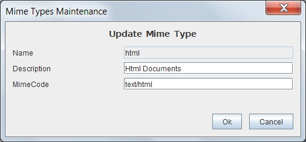

Mime Types Maintenance
When selected in the form Mime Types List one of the options to add, delete, modify or copy the Mime Type will appear this form with different fields on or off.
This form contains the information:
- Mime Type Name: Mime type identifier whose value can not be repeated or changed once assigned. You should follow the standard (IANA MIME Media Types) so that it can be interpreted by browsers and applications. It can have a maximum length of 32 characters. (Eg "application/pdf")
- Mime Type Description: Description that allows to remember the type of files included. It can have a maximum length of 128 characters. (Eg "PDF files, as defined by Adobe and ISO")
- Extension of the files: Usual extension of the files of this type (eg, "pdf", "tiff", "jpg"

Ver: Mime Types List
Help Index OpenProdoc